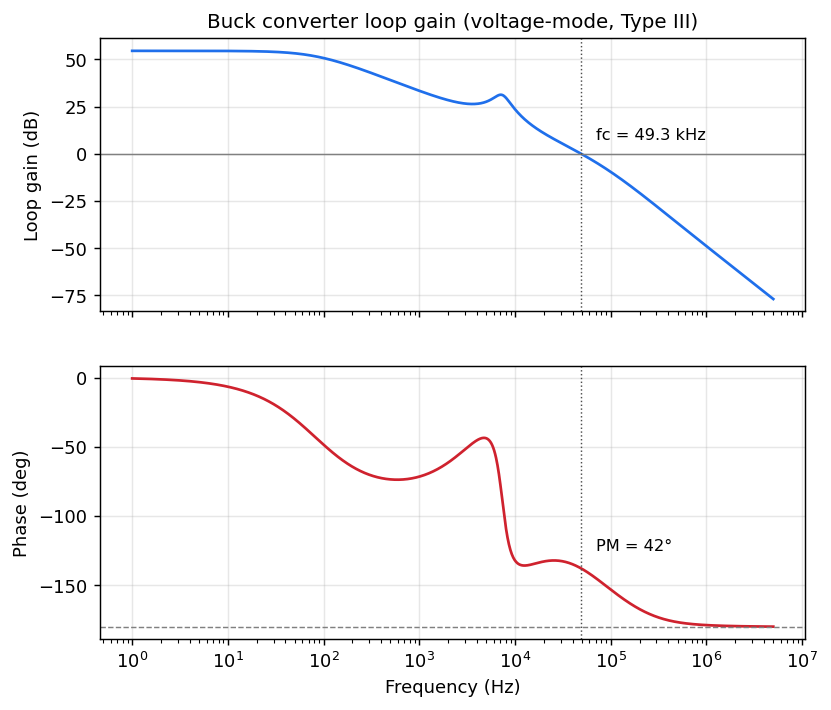
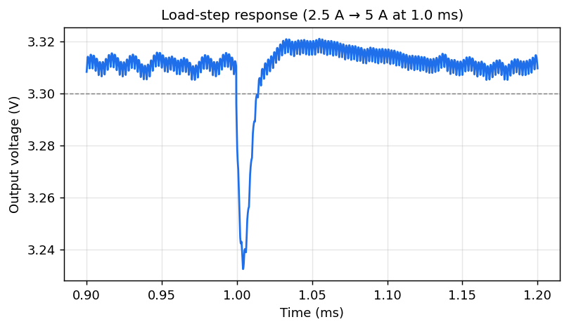
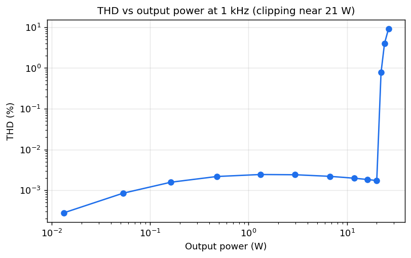
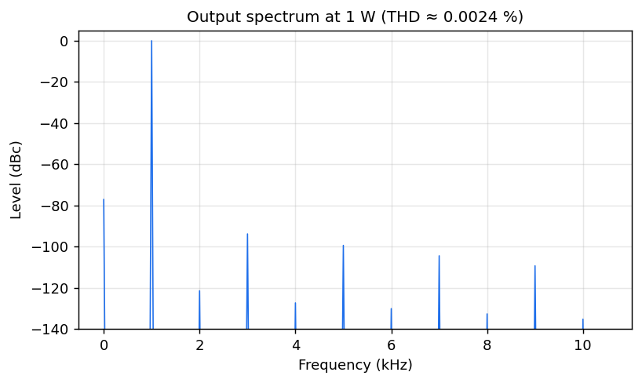

Sakthi Chandramohan · ngspice
These two projects are worked through the way a circuit actually gets designed, which is to say that the netlist is written, the simulation is run, the resulting plots are read, and the next decision is taken from what those plots show. The compensator of the converter was tuned by reading its loop-gain Bode plot until the phase margin was adequate, the bias of the amplifier was set by watching its quiescent current and its distortion spectrum, and in both cases the figures below are the same ones used to make the engineering choices rather than decoration added afterward.
Everything here is built directly from ngspice netlists and rebuilds from source with a single command, so the analysis and its results stay reproducible from text.
A 12 V to 3.3 V, 5 A synchronous buck converter switching at 500 kHz, designed under voltage-mode control with a Type III compensator. An averaged model is used to measure the loop gain by Middlebrook voltage injection, a switching model is used for the soft-start and the load-step transient, and a Monte Carlo study confirms that the loop stays stable across the spread of real component tolerances.


Results: crossover 49.3 kHz, phase margin 42°, peak efficiency 98%, worst-case phase margin 37° over 300 Monte Carlo trials.
View the repository and full write-up →A discrete complementary Class-AB output stage running inside a feedback loop, biased by a Vbe multiplier and built from Darlington pairs so the drive is never starved at high output. The amplifier is characterized the way a power stage is characterized before it is built, through its quiescent current, its frequency response, its harmonic distortion against level, its slew rate, the thermal behavior of its bias, and its output impedance. The distortion spectrum is computed from the simulated waveform by a discrete Fourier transform.


Results: gain 23, bandwidth 410 kHz, THD 0.0024% at 1 W, slew rate 2.4 V/µs, output impedance 1.6 mΩ (damping factor about 4900).
View the repository and full write-up →